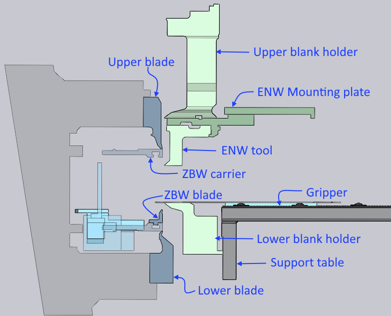
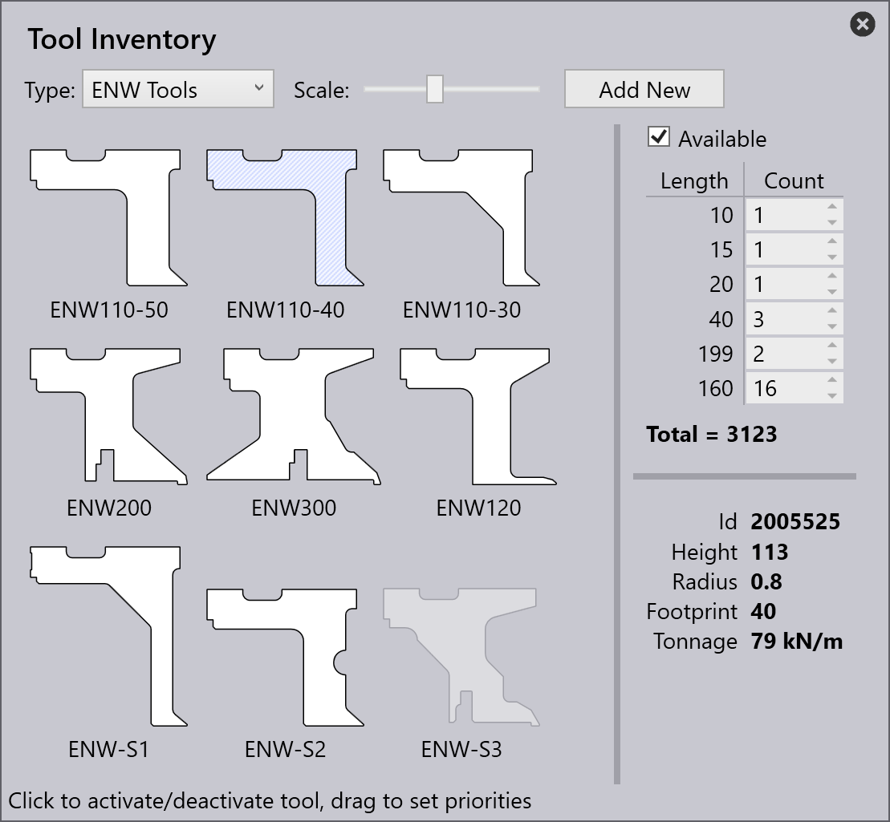
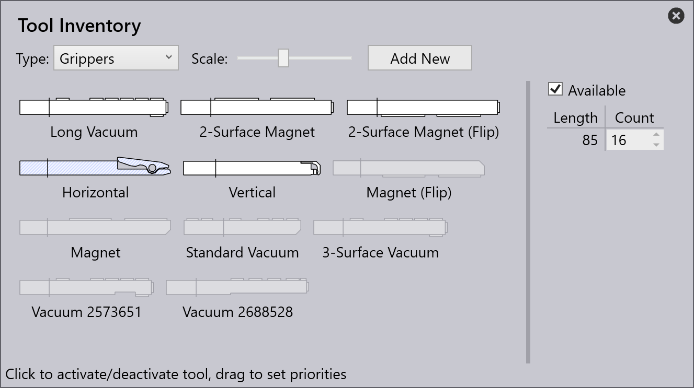
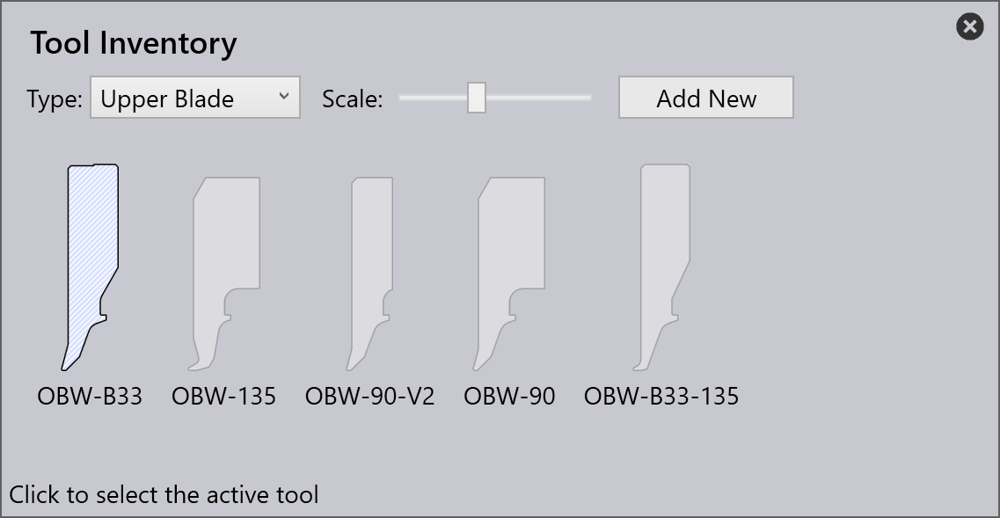

Tool inventory
There are many ENW blank-holders, ZBW blades and part manipulators (grippers) that can be installed and used with the panel bender.

The Tool Inventory window in TecZone Fold is used to configure these attachments and tools for the panel bender.
To access the Tool Inventory window, open a part, and tool it up for a particular panel bender. Then, click on the inventory button in the command bar to open the Tool Inventory window.
Editing ZBW blades or ENW tools
Use the Type selector to pick the type of tool or gripper you want to view and edit. When a tool is selected, a panel opens on the right, where you can additionally control if this tool is available for use for this machine, and also set up the inventory quantities of the individual segments.

-
Click on Available to toggle if this tool is available for use in this machine. Unavailable tools are grayed out (as with the ENW-S3 tool in the image on the right). If a tool is marked as available, the TecZone Fold auto-tooler will try to use it automatically if it can help avoid a collision.
-
Use the Count column of the inventory table to set up the inventory of pieces to match what you have on your shop floor. This is used by TecZone Fold to compose various lengths by combining these pieces.
Editing a gripper
Similarly, you can edit the inventory of grippers (or part manipulators by selecting Grippers from the Type drop-down list). Here is an example of the available grippers being edited:

Importing custom tool data
TecZone comes with many of the standard ENW and ZBW tools already installed for use in its database, and you just have to select the tool and mark it as Available for the auto-tooler to use it. Sometimes, you will purchase a non-standard custom tool. In this case, it will be accompanied by a tool-data file (or .tdata file). You can import this file by clicking on the Add New button and selecting it.
The custom tool then gets added to the catalogue. The .tdata file contains information to let TecZone Fold know about the geometry and specifications of the tool and then it can be used as any standard tool would be.
Editing machine configuration
Some tool types like the upper and lower blades, upper and lower blank-holders, or even the machine C-Frame are changed very rarely. To access these tool types in the Tool Inventory dialog, you need to run TecZone in admin[1] mode.
In this mode, there are more tool types displayed in the Type drop-down list and you can select and change one of them. Unlike the other tools (like ZBW, ENW, Grippers), only one of these components can be installed on the machine at one time. so you can just select one. Here’s an example of how we would select a different upper blade:

| Setting any of these components (like the upper or lower blank-holders, upper or lower blades) to a variant that is not actually installed on your machine can result in unexpected collisions that are not detected in TecZone Fold. Proceed with caution when you are editing these admin mode settings. |
All these settings are for the currently selected panel bender (the one being used for the current part). If you have multiple panel benders, you can vary these settings individually for each one.
-admin command-line parameter